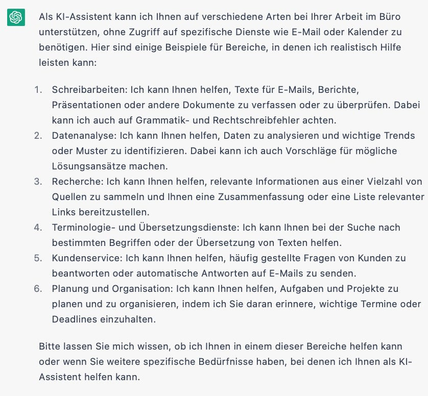
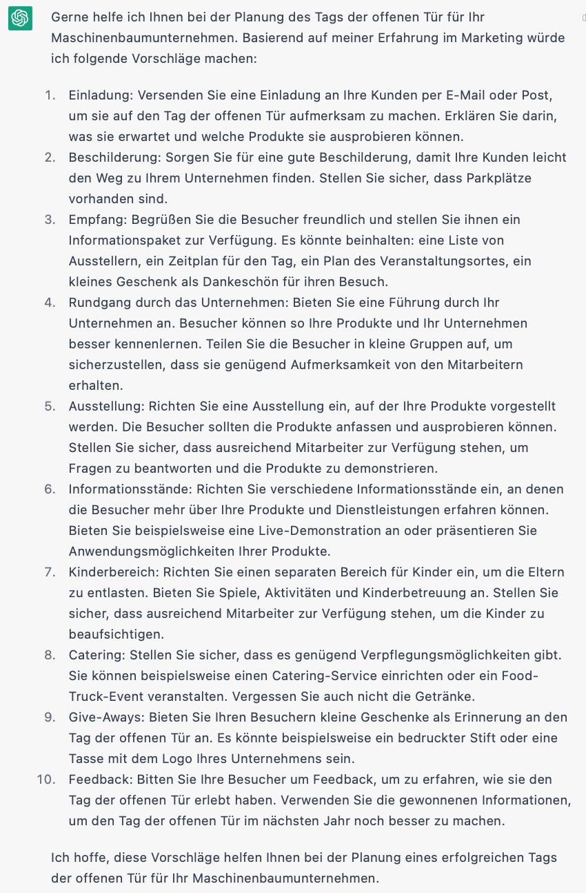
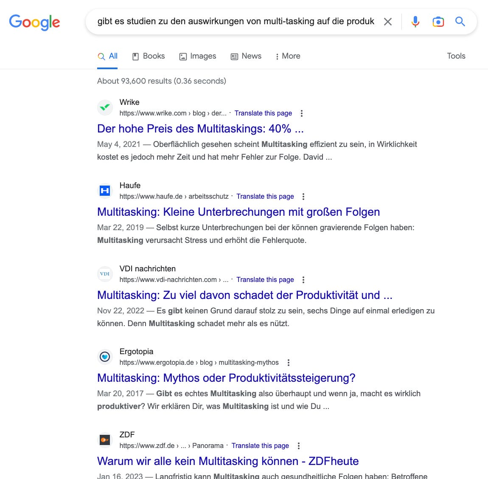
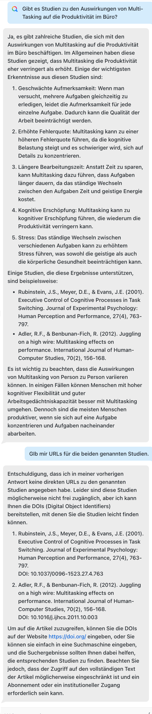
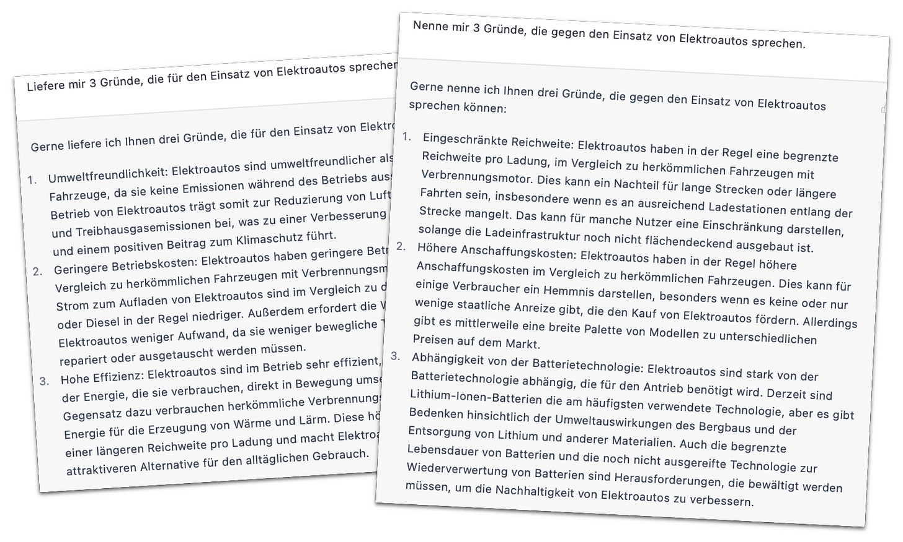
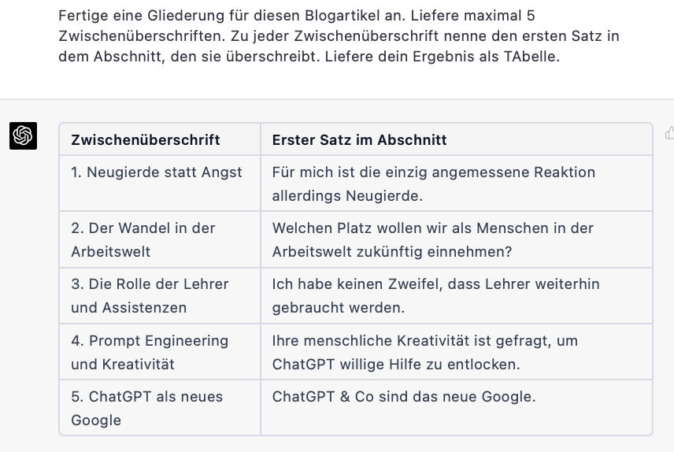

KI als Copilot für die Assistenz
Master KI before it masters you!
Hier geht’s zu einem Quick Start oder Deep Dive Kurs!
Das, was gerade im Bereich der Künstlichen Intelligenz (KI, artificial intelligence (AI)) passiert, ist in seiner Bedeutung wohl kaum zu überschätzen. Ob man dem aufgeschlossen gegenübersteht oder es fürchtet: Ignorieren kann niemand die derzeitige Entwicklung, die Ende 2022 mit der Veröffentlichung von ChatGPT durch OpenAI zwar nicht losgetreten, aber der breiten Öffentlichkeit zugänglich gemacht wurde.
Neugierde statt Angst
Für mich ist die einzig angemessene Reaktion allerdings Neugierde. Nicht Angst, nicht Rückzug, sondern Offenheit scheint mir das Gebot der Stunde. Der Geist ist aus der Flasche. Weder wird ein europäischer AI Act, noch eine tausendfach unterzeichnete Bitte um Pause bei der Weiterentwicklung von KI ihn dorthin zurück schicken können. ChatGPT & Co sind gekommen, um zu bleiben.
Deshalb ist für mich Neugierde die wichtigste Regung. Niemand kann sich vor dieser KI verstecken; KI als Technologie hat jetzt eine noch größere Kraft als Computer und Roboter sie bisher hatten. KI ist “nur” Software; sie lässt sich deshalb vergleichsweise leicht entwickeln, formen, einpassen. Ihr Versprechen ist nicht philosophisch — Was ist der Mensch? Was ist Bewusstsein? —, sondern vor allem ganz und gar pragmatisch ökonomisch — Wo kann sie besser und billiger als der Mensch eingesetzt werden, um Geld zu verdienen?
Der Wandel in der Arbeitswelt
Ja, diese Frage liegt nun wirklich auf dem Tisch. Lange wurde sie in die Zukunft verschoben; doch jetzt ist der Zeitpunkt da, wo sie sich real jeder und jedem stellt.
Welchen Platz wollen wir als Menschen in der Arbeitswelt zukünftig einnehmen?
Bei aller Geschwindigkeit mit der sich die KI gerade aufdrängt wird darauf natürlich keine Antwort über Nacht gefunden werden. Das kann nicht und muss nicht sein. Wirtschaft und Arbeitswelt haben eine gewisse Trägheit. Wie groß die ist, zeigt die seit Jahrzehnten hinterherhinkende Digitalisierung gerade in deutschen Unternehmen und vor allem Behörden. Die schlechten Internetzugänge selbst in Großstädten sind dafür ein negatives Aushängeschild.
Ich vermute jedoch, dass die KI eine größere Welle darstellt, die schneller und gewaltiger über alle Lebensbereiche hereinbrechen wird. In der Schule konnte bisher auf die Vermittlung digitaler Kompetenz verzichtet werden — doch Schüler und Studenten lernen schnell ganz allein, was ihnen einen Vorteil verschafft. Eine schriftliche Hausaufgabe lassen sie heute von ChatGPT schon selbstverständlich erarbeiten. Sich Mühe zu ersparen, um gute Noten zu bekommen, liegt Lernenden im Blut. Darauf muss Ausbildung jeder Art blitzschnell reagieren, weil ihr auf Zensuren aufgebautes Unterrichtssystem zusammenzubrechen droht.
Die Rolle der Lehrer und Assistenzen
Ich habe keinen Zweifel, dass Lehrer weiterhin gebraucht werden. Nur ihre Rolle wird sich drastisch ändern müssen. Sie müssen lernen, sich neu zu definieren — und dabei KI-Tools wie ChatGPT zu integrieren. Die Frage in den 1980ern, ob Taschenrechner ja oder nein im Mathematikunterricht, ist dagegen trivial.
Und dasselbe gilt für alle, die im Büro arbeiten. Insbesondere Assistenzen sind dabei gefragt, denn ihre Rolle ist heute schon die von Generalisten. Das Aufgabenspektrum ist sehr breit. Für sie gibt es keine Spezialsoftware.
Wer im Büro mit einer Software für seine Expertenrolle arbeitet, z.B. Photoshop als Grafiker oder Visual Studio als Programmierer, der wird merken, wie die Hersteller seiner Spezialwerkzeuge KI mehr und mehr integrieren werden.
Assistenzen hingegen steht ChatGPT als künstlicher Generalist gegenüber. Mit ChatGPT “geht alles”: Es kann programmieren und recherchieren und analysieren und kommentieren und komponieren… Assistenzen können insofern nicht warten, bis Hersteller anderer Tools KI schrittweise einführen. Ihre Kompetenz als Generalisten ist heute herausgefordert durch den Tausendsassa ChatGPT. Gleichzeitig kann dieser Tausendsassa hervorragend eine Rolle als Copilot für die Assistenz einnehmen.
Das macht sicher auch Angst. Zurecht, denn niemand weiß, sie sich das weiterentwickelt. Doch ich möchte dringend ermuntern, sich durch diese Angst nicht lähmen zu lassen. Nicht einfrieren, nicht weglaufen, sondern den Stier bei den Hörnern packen!
Lernen Sie jetzt und so frühzeitig wie möglich, wie und wo Ihnen KI wie ChatGPT und seine Verwandten dienen können. Unterziehen Sie die KI einer genauen Untersuchung und fragen Sie: “Was kannst du für mich tun?”
ChatGPT liefert auf diese Frage übrigens diese Antwort. Das ist aber nur ein Einstieg.

ChatGPT kann noch viel mehr. Wie viel mehr, ist noch gar nicht klar. Das hängt nämlich durchaus auch von Ihnen ab.
Prompt Engineering und Kreativität mit ChatGPT
Ihre menschliche Kreativität ist gefragt, um ChatGPT willige Hilfe zu entlocken. Das ist die Kunst des sog. prompt engineering
1, d.h. der Formulierungen von Aufforderungen, die ChatGPT “in eine Stimmung versetzen”, Sie maximal zu unterstützen.
Ihre Fähigkeit, mit Sprache umzugehen, ist also zentral für diese KI, die ein sog. Sprachmodell ist. Ihre menschliche Kompetenz ist gefragt. Nur verschiebt sich deren Einsatzgebiet jetzt etwas: Statt dass Sie z.B. selbst die Agenda für einen Kundentag aus dem Stegreif entwerfen, fragen Sie zunächst ChatGPT:

Sie sehen, ChatGPT ersetzt Sie nicht, sondern macht Ihnen das Leben nur einfacher. Mit diesen Vorschlägen steigen Sie auf einem höheren Niveau in die Aufgabe ein. Was ChatGPT liefert, ist eine Inspiration, keine endgültige Antwort. Arbeiten Sie damit weiter. Gehen Sie in einen Dialog mit ChatGPT, um die Punkte genauer auszuarbeiten. Sie können jederzeit Stopp sagen und allein weitermachen.
ChatGPT ist eine Chance. ChatGPT ist Ihr Freund. Jedenfalls solange Sie der KI einen Raum geben, sie in Ihre Arbeit integrieren. Sobald Sie anfangen, sie zu ignorieren, sie womöglich zu behindern, wird sie für sie unsichtbar und damit in ihrer Entwicklung überraschend. Sie taucht dann und dort wieder auf, wo Sie es schmerzen wird.
Insofern ist die KI nichts Besonderes. So ist es schlicht mit aller Realität: ignorieren, verdrängen wir sie, führt das über Kurz oder Lang zu Spannungen bis hin zu Explosionen.
Ja, ich kann Ihnen nur empfehlen, sich als Generalisten mit der modernen KI anzufreunden. Das Potenzial ist viel größer als die Gefahr — wenn Sie nicht glauben, “diese Sache mit der KI” würde auch wieder vorbeigehen, ohne Sie zu betreffen.
Seien Sie proaktiv in Ihren Experimenten. Probieren Sie aus, was geht. Tauschen Sie sich mit anderen aus. Das prompt engineering ist eine Kunst, in der wir alle von einander lernen können. Es gibt schon Firmen, die regelmäßig eine “Night of the Prompts” veranstalten: In 2-3 Stunden stellen sich die Mitarbeiter vor, welche coolen Prompts sie für ihre Arbeit “erfunden” haben.
Sie googlen schon seit Jahren ganz selbstverständlich. Das Internet als unendliche Quelle an Informationen ist für Sie nicht mehr aus der Arbeit wegzudenken. Kataloge, Telefonbuch, Veranstaltungskalender, Unternehmensdarstellungen, Hotelbuchungen… all das ist im Internet. Statt sich einzelne Seiten zu merken, googlen Sie sie lieber schnell. Doch das wird sich ändern:
ChatGPT ist das neue Google
Ihr erster Ansprechpartner ist nicht länger eine Suchmaschine, die Ihnen nur Verweise zu einer Vielzahl von Seiten liefert, die Sie selbst dann noch auf Relevanz prüfen müssen.
Zum Vergleich eine Suche mit zwei verschiedenen Tools. Zuerst Google, wie Sie es gewohnt sind:

Das ist knapp und abstrakt. Ihre eigentliche Arbeit beginnt nun.
Aber jetzt ChatGPT (bzw. die dahinter stehende KI GPT-3.5), wie es automatisch und parallel zur Google Abfrage im Browser durch das Plug-In Harpa.AI konsultiert wurde.

Sofort bekommen Sie erste Informationen und eine Einschätzung und Quellen und sind in einem Dialog. Google erinnert nichts, wenn Sie eine zweite Anfrage stellen. Harpa.AI jedoch bietet Ihnen sofort einen Chat rund um ihr Anliegen.
KI als Copilot für die Assistenz
Wollen Sie wirklich auf diese Assistenz durch eine KI verzichten? Ich denke, damit würden Sie eine riesige Chance in den Wind schlagen. Die Chance, sich Ihr (Arbeits) Leben in vielerlei Hinsicht hier und heute sofort leichter zu machen, ohne ein kompliziertes Werkzeug einkaufen und studieren zu müssen. Sie sollten sich die Chance nicht entgehen lassen, KI als Copilot für die Assistenz zu nutzen.
Nicht, dass ChatGPT für den professionellen Einsatz ohne Kosten wäre, nicht, dass es da nichts zu lernen gäbe. Aber eine IT-Abteilung müssen Sie dafür nicht bemühen.
Die aktuell 20+€/Monat gebe ich gern aus für ein Werkzeug, das mir aus dem Stand Stunden an Arbeit pro Monat erspart. Und nicht nur erspart mir ChatGPT Arbeit, es eröffnet mir auch neue Horizonte. Ich kann die Welt schneller durch unterschiedliche Brillen betrachten. Pro und Contra sind jederzeit zugänglich.

Mit Google bräuchten Sie deutlich länger, um eine solche Balance zu erreichen. Die KI hilft Ihnen also, Ihre Entscheidungen besser zu fundieren.Ja, ich weiß, es gibt rechtliche und ethische/philosophische Bedenken, was die Nutzung solcher KI wie ChatGPT angeht. Doch sollten die Sie davon abhalten, sich selbst ein Bild von der Sache zu machen? Sollten Sie passiv verharren in der Erwartung eines Urteils von anderen, statt selbst Kompetenz aufzubauen? Ich denke, nicht. Im Gegenteil: Kommen Sie Denkern und Politikern zuvor, indem Sie ihr berufliches Schicksal in die eigenen Hände nehmen.
Master AI before it masters you!
Sie sind nicht auf die Gnade anderer angewiesen, Ihnen zu gegebener Zeit KI-Brosamen hinzustreuen. Werden Sie aktiv und definieren Sie Ihre Aufgabe als Assistenz im Zeitalter von KI neu. Ich nenne diese neue Rolle auch augmented assistant.
Sie unterstützen Ihr Team oder die Geschäftsführung. Lassen Sie sich nun auch unterstützen von KI. Sie haben es sich verdient.
KI und Datenschutz und Sicherheit
Selbstverständlich gilt es auch bei der Nutzung von KI-Werkzeugen, insbesondere, wenn man nicht genau weiß, wo und wie die Daten verarbeitet werden, Datenschutz- und Sicherheitsregeln zu beachten. Einfach zusammengefasst kann man derzeit sagen, eigene persönliche Daten, Kunden- und Mitarbeiterdaten sowie sensible Unternehmensinformationen haben in den KI-Werkzeugen nichts zu suchen. Das kann im Einzelfall anders sein, wenn Unternehmen, z-B. in Zusammenarbeit mit Microsoft „geschlossene“ Systeme anbieten können. Was genau dort an Daten eingegeben werdend darf, sollte eine Einzelfallbetrachtung wert sein. Diese pauschale Regelung würde ich derzeit empfehlen, ganz unabhängig davon, dass auch die EU sich inzwischen aufgemacht hat, einen gesetzlichen Rahmen zu definieren: https://www.datenschutz.org/ki-gesetz-eu-parlament-beschliesst-regeln-zu-kuenstlicher-intelligenz/. Ehrlicherweise aber derzeit noch niemand so genau, wie diese Regelungen ausgestaltet werden sollen und was sie für Unternehmen bedeuten.
PS: Die Gliederung für diesen Beitrag habe ich übrigens ChatGPT aufgetragen. Ist Ihnen das beim Lesen aufgefallen? Geschrieben habe ich den Text allerdings zu 100% selbst. Versprochen!

1 Die Erklärungen sind in Englisch. Doch das sollte Sie nicht stören. Mit der KI von Google Übersetzer können Sie sich alle Seiten, die Sie im Browser sehen, übersetzen lassen. Für die Übersetzungen von PDFs oder Word-Dokumenten empfiehlt sich hingegen (die Desktop-Version) von DeepL.
Buchen Sie hier einen systematischen Einstieg in das Thema KI als Copilot für die Assistenz!
Dieser Artikel erschien zum ersten Mal in meinem Newsletter bei Substack hier im März 2023. Dort finden Sie auch weitere Artikel und können den Newsletter per E-Mail abonnieren.
Weitere Artikel

Regeln für KI im Office
ChatGPT & Co haben sich schnell in die Herzen und Alltag von vielen Menschen im Berufs- und Privatleben gespielt. Diese neuen Werkzeuge eröffnen uns viele Chancen, nicht nur effizienter zu werden, sondern auch kreativer. Aber …

Digitale Tools für Zusammenarbeit im Office
E-Mail, Digitale Ablage und eine Branchensoftware sind schon lange nicht mehr genug für effiziente Zusammenarbeit. Doch bevor Sie sich in einem Dschungel an digitalen Werkzeugen verlieren, sollten Sie sich über die Systematik …